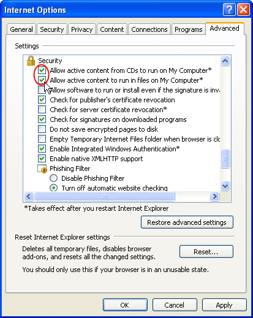

Allow Active ContentIf you are prompted by your internet browser with a message asking to "Allow Active Content", click yes. This may be all that is required to proceed in viewing the content on this device. If you are still not able to view the contents of this device, continue with the steps listed below. If this e‑learning course is located on a CD/DVD, USB drive or on your computer (not on a Web site), you must take into consideration that Windows Internet Explorer 7 and later versions have restricted files from running active content from unknown sources that could harm your computer. When inserting the CD your confirmation is required to allow active content from the CD to run on your computer. If you answered Yes you can start this e‑learning course. If you answered No then follow these steps to allow active content:
|
 |